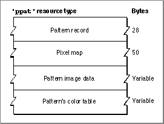

The Pixel Pattern Resource
You can use a pixel pattern resource to define a multicolored pattern to display with Color QuickDraw routines. A pixel pattern resource is a resource of type'ppat'. All'ppat'resources should be marked purgeable, and they must have resource IDs greater than 128. Use theGetPixPatfunction (described on page 4-79) to create a pixel pattern defined in a'ppat'resource. Color QuickDraw uses the information you specify to create aPixPatrecord in memory. (ThePixPatrecord is described on page 4-49.)This section describes the structure of this resource after it has been compiled by the Rez resource compiler, available from APDA. However, you typically use a high-level tool such as the ResEdit application, also available through APDA, to create
'ppat'resources. You can then use the DeRez decompiler to convert your'ppat'resources into Rez input when necessary.The compiled output format for a
'ppat'resource is illustrated in Figure 4-16.Figure 4-16 Format of a compiled pixel pattern (
'ppat') resource
The compiled version of a'ppat'resource contains the following elements:
- A pattern record. This is similar to the
PixPatrecord (described on page 4-49), except that the resource contains an offset (rather than a handle) to aPixMaprecord (which is included in the resource), and it contains an offset (rather than a handle) to the pattern image data (which is also included in the resource).- A pixel map. This is similar to the
PixMaprecord (described on page 4-37), except that the resource contains an offset (rather than a handle) to a color table (which is included in the resource).- Pattern image data. The size of the image data is calculated by subtracting the offset to the image data from the offset to the color table data.
- A color table. This follows the same format as the color table (
'clut') resource described next.